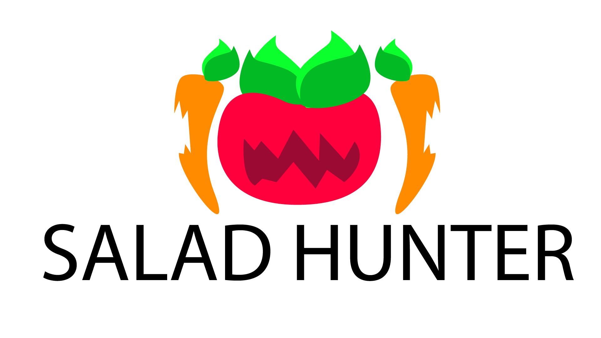
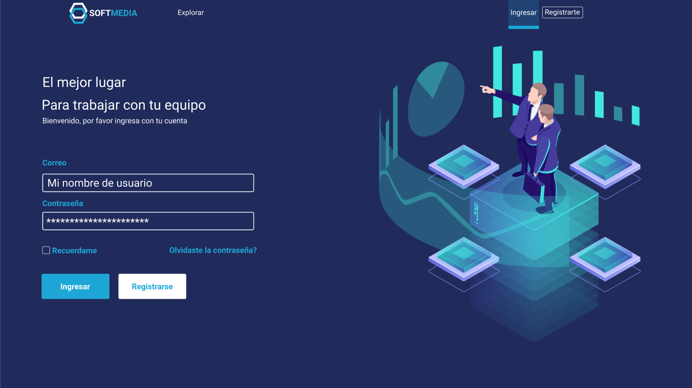

Habilidades
Proyectos

Proyecto inspirado en la necesidad de enseñar buenos hábitos alimenticios a los niños, el juego nos relata la historia de una sobreviviente en un apocalipsis vegetal donde las verduras se an revelado contra los humanos.

Proyecto inspirado en la necesidad de enseñar buenos hábitos alimenticios a los niños, el juego nos relata la historia de una sobreviviente en un apocalipsis vegetal donde las verduras se an revelado contra los humanos.